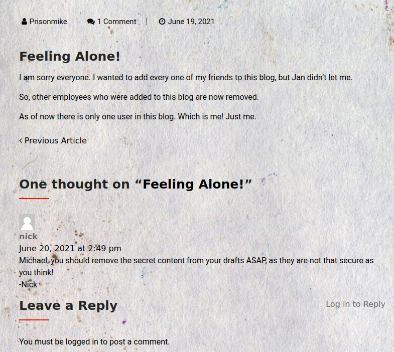
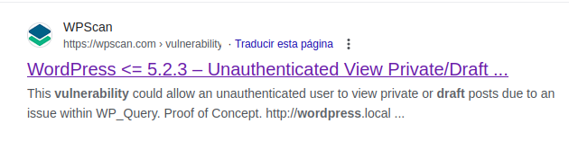
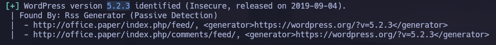
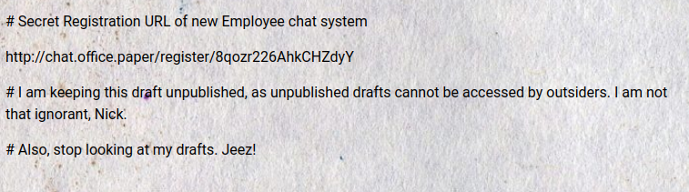
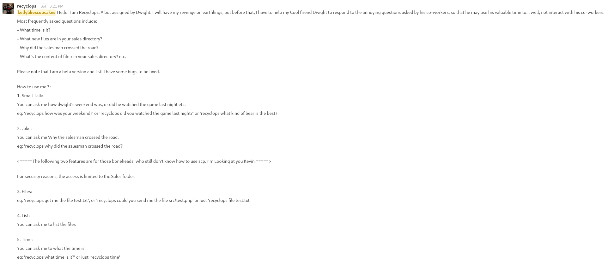
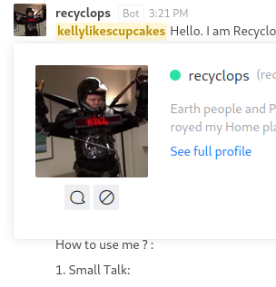
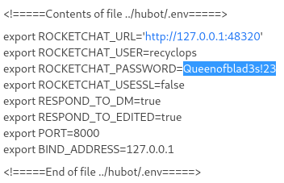
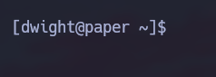

Linux · Laboratorio
Paper
Enumeración web, lectura de información mediante un bot y escalada con Polkit.
Web · Bot · Polkit
La pista estaba en las cabeceras
Empezamos enumerando los servicios y revisando la web. Solo aparece una página por defecto de Apache, pero al consultar las cabeceras del puerto 80 encontramos una referencia a office.paper. Añadimos el dominio a /etc/hosts y llegamos a un blog de WordPress. Uno de los comentarios menciona borradores, así que revisamos la versión con WPScan y buscamos información sobre la exposición de ese contenido.



La prueba nos permite leer borradores que no deberían ser públicos. En ellos aparece un enlace de invitación a un chat interno. Añadimos el nuevo dominio a /etc/hosts y nos registramos.

Hablando con Recyclops
En el chat encontramos un bot llamado Recyclops que puede listar archivos. En la conversación general solo tenemos lectura, pero podemos abrirle un mensaje privado y probar ahí sus funciones.


Le pedimos que liste su directorio de trabajo y después probamos a salir de la ruta esperada. Además de listar, puede mostrar el contenido de archivos con su función file.
Credenciales en el entorno del bot
Revisando el proyecto de Hubot encontramos .env. Pedimos al bot que lo lea y aparecen credenciales. Las probamos por SSH y podemos entrar en el sistema.


Escalada con Polkit
Después de revisar el sistema sin encontrar una vía clara, utilizo LinPEAS. Entre sus resultados aparece una versión de Polkit que investigamos para la escalada. El script que utilizamos crea un usuario con permisos de sudo. Cambiamos a ese usuario y, desde ahí, elevamos la sesión a root.